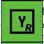
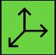
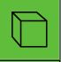
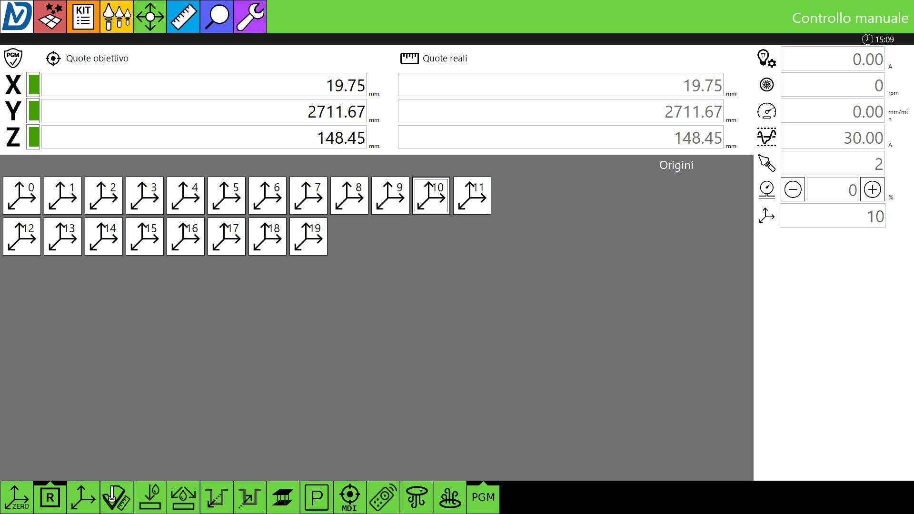
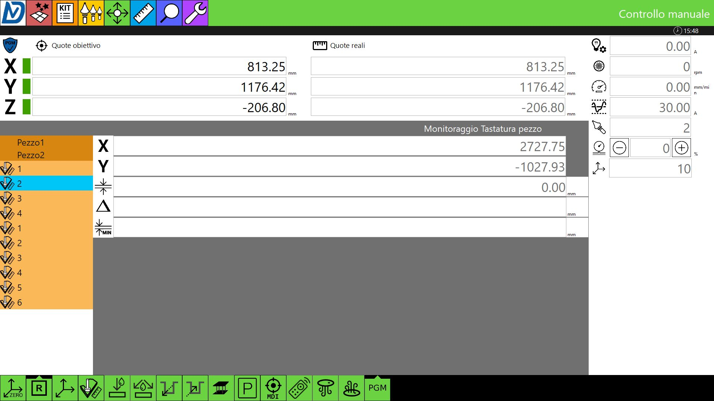
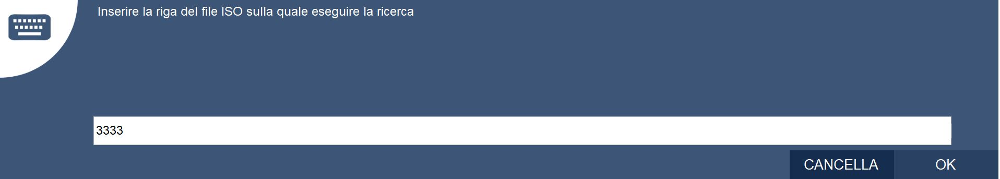

The axis positions are shown at the top, the data for the tool installed on the machine are shown on the right, and the central area changes according to the button selected on the bar below.

Buttons
Home axes | |
 | Home individual axis |
 | Home X axis |
 | Home Y axis |
 | Home Z axis |
 | Active origin |
Check probing results | |
Internal water | |
External water | |
 | Machine over worktable |
Machine clear of worktable | |
 | Suction cup positioning |
 | Parking |
MDI – Move to position | |
Remote movement | |
 | Suction cup vacuum |
 | Suction cup blow-off |
 | External program actions |
 | Load for execution |
 | View code |
 | Preview |
Selecting the active origin
The number of the active origin is shown in the right-hand column below the tool data.
To change the number, press the corresponding button in the centre of the page.

The Reset origin buttons can then be used to store different origins, bearing in mind that:
Origin 0 cannot be changed and refers to the machine zero point
Origin 19 is reserved for the worktable origin
Workpiece probing monitoring
The probing results can be viewed for either the individual probed point or the workpiece as a whole. Pressing the list on the right highlights the corresponding data.

The following are shown for each point:
X position
Y position
Measured thickness value
The following are shown for the workpiece:
Difference between the maximum and minimum measured thicknesses
Minimum measured thickness
ISO execution
Programs generated using CAD-CAM and external software can be loaded. These programs, with the “.pgm” extension, can be saved in computer folders or stored on a USB device and loaded as required.
The software provides a code view in which the lines of the loaded “.pgm” file can be read directly in the centre of the page.

Alternatively, a graphical preview of the workpiece can be displayed. The controls on the right of this screen can be used to change the view.

The active automatic mode indicator is located in the top-left corner of the manual page.
 | PGM |
 | PGM |
Block search
When executing “.pgm” files, the block search function may be useful for repositioning the tool at the point where the machine stopped executing the program. The function can only be enabled if the program is loaded.
 | Enable block search |
 | Disable block search |
 | Go to line  |
Once the function has been enabled, the line from which processing is to continue/start can be found by selecting it directly in the editor or by entering its line number.
After selecting the point in the program from which to restart, press the “Cycle Start” button and wait a few seconds; the machine will recalculate all the lines of code in the “.pgm” file without performing any movement. The duration of this operation depends on the number of lines of code that must be checked without performing any movement.
Once recalculation is complete, the machine activates an automatic pause and requires the “Cycle Start” button to be pressed again to start processing.